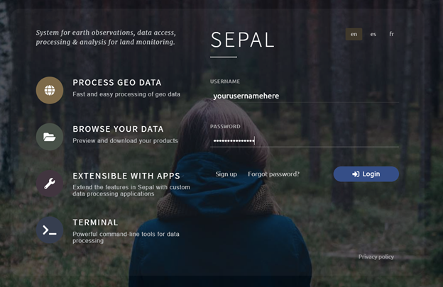
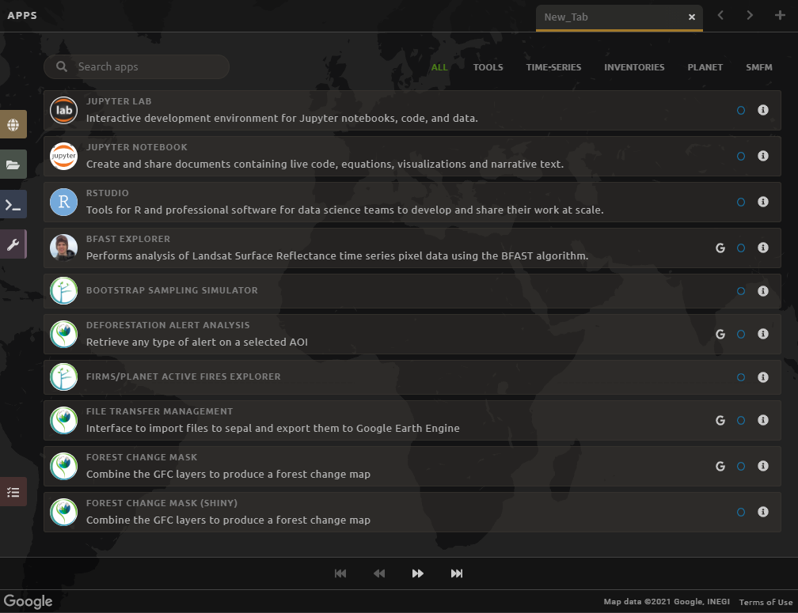

Introduction to SEPAL¶
In this page, you will be introduced to the SEPAL interface. You will learn how to access SEPAL’s features to facilitate the remote sensing exercises in the rest of the documentation.
Note
objective
Navigate the SEPAL interface
Learn about the functionalities of SEPAL
Warning
prerequites
Internet access
SEPAL account (see ‘Getting Started’)
Access SEPAL¶
Navigate to https://sepal.io/ to open SEPAL.
Type in your Username and Password and click Login.
Tip
When working in SEPAL, do not click your browser’s back button. This will go back to the previous web-page. Use the buttons within SEPAL to navigate to previous pages. There may also be an arrow in the upper left or right-hand corner of the SEPAL interface to navigate to a previous window.
Setup the local¶
The first step to create a SEPAL environment is to set up the language you want to use.
Note
This selection will not be definitive and you will still be able to change from the launch page
Sepal is by default in English, but is also available in several languages such as French and Spanish. To use these language in sepal come back to the launch page. (disconnect yourself if necessary). On this page click on Launch.
Once you’ve clicked, you will access the login page. At the top-right side of this panel, click on the button corresponding to your language:
fr: Français
en: English
es: español
The SEPAL launch page should reload itself and the language you selected will be used by the platform for all its tools.
SEPAL Interface¶
Home¶
Once you are logged in, you will see the following screen. Notice that your username is displayed in the bottom right of the window.

There are four main navigation tabs in the dock on the left side of the screen.
Process: select imagery and create mosaics.
Files: navigate through your personal SEPAL folders. This is where you can download or delete data, as well as visualize it using the Data Visualization link.
Terminal: access to the command line for the LINUX server.
Apps: links to a variety of pre-loaded tools.
At the lower left is the red Tasks tab. Clicking on this brings up a list of currently running tasks.
Account Information can be found in the bottom right of the web-page by clicking the button that shows your username. This opens an overlay that displays important user account information.
You can edit your user account info, including Name, Password, Email and Organization here. Click Save to make those changes permanent.
Note
You cannot edit your Username in this interface.
Change the Google Account associated with your SEPAL account by clicking Use my own Google Account and following the instructions. SEPAL relies on Google Drive as a storage space for data accessed through the platform. Any imagery tiles or mosaics that you “retrieve” will first be saved to a Google Drive account before you can visualize and process them in SEPAL.
Warning
Be sure to connect your Google Account in order to be able to Retrieve Mosaics and use the export function in SEPAL. You should use the same account you used to sign up for Google Earth Engine.
Next to your Account Information is a section called User Report, represented by the $ X/h. This shows you the allotted budgets you have. An instance refers to any of the various processes that you can perform in SEPAL. If you are running any processes in your current session, they will show up here under Sessions.

Process Tab¶
Click the Process tab on the left side of the window.
You should now see four options in the center of the screen:
Optical Mosaic allows you to create a mosaic using Landsat and/or Sentinel 2 data. This is what we will do in Exercise 1.2.
Radar Mosaic allows you to create a mosaic using Sentinel 1 data.
Classification allows you to use a random forest model to classify images from SEPAL or GEE. This will be the focus of Module 2.
Time Series allows you to download time series information to your SEPAL storage.
When you click on one of these options, it will open a new tab with the GUI interface that allows you to specify your desired options.
Files Tab¶
Click the green Files tab on the left side of the window. This will display all of your files in SEPAL.
For example, click the downloads folder to expand it. This will display the folders containing any of the data you have downloaded in SEPAL. If you have not downloaded mosaics in SEPAL yet, then this folder will be empty.

Notice that there are four buttons at the top right of the window. The three rightmost buttons are inactive, but activate when you select a file.
The left button will show hidden files (files and folder names starting with ‘.’).
The second button will download selected data to your local computer.
The third button will delete the selected folder or file.
The last button will clear your selection.
Terminal Tab¶
Click the Terminal tab on the left side of the screen.
This links you to the Linux command line that you can use in a variety of ways to manage data, load data from an outside location or process data using a series of commands.
When you initially load the Terminal, you will see information about your usage and the available types of instances you can initialize.
One of the most important features of the Terminal is the ability to increase your instance size. The default instance is not sufficient for analyzing large amounts of data, for example running a classification on a large area.
To increase the size of your instance, follow the following steps:
First examine the “Available instance types” table. This is updated periodically but an example from September of 2020 is shown below.
Choose an instance Type that fits your needs. Frequently a t2 or m2 is sufficient and cost effective.
Next to the “Select (t1):” text, type in ‘t2’ or your chosen instance type.
Press Enter on your keyboard.
Wait for the new instance to start. This will take several minutes.
{kind=link}
Apps Tab¶
Click the Apps tab on the left side of the screen. This will open up a screen that shows applications that you can access through SEPAL.
This will bring up a list of apps you can run in SEPAL. More information about each app is found by clicking on the “i” on the right hand side. Some of the apps include:
R Studio: provides access to R environment where you can run processing scripts and upload data to your SEPAL folder.
Stratified Area Estimator- Design: tool for creating stratified designs to estimate areas. We will use this tool in Module 4.
Stratified Area Estimator- Analysis: tool for analyzing the results of your stratified design sampling to estimate areas. We will use this tool in Module 4.
Geo Processing- Beta: offers a selection of easy-to-use change detection and segmentation tools.
BFAST Explorer: tool for performing pixel-based time series analysis of Landsat Surface Reflectance data.
Many more that can be found in the section Modules of the documentation.